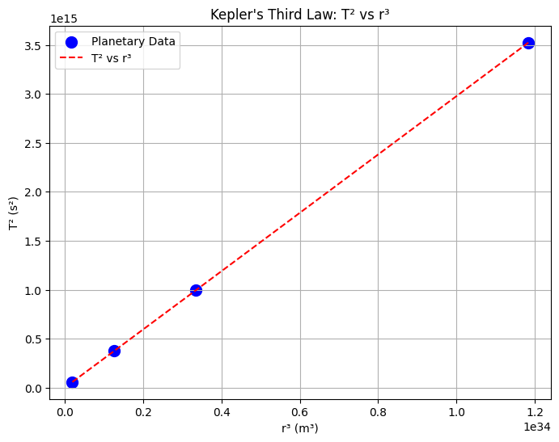

Problem 1: Orbital Period and Orbital Radius (Kepler's Third Law)
Derivation of Kepler's Third Law:
Kepler’s Third Law states that for objects orbiting a central body, the square of the orbital period \( T \) is proportional to the cube of the orbital radius \( r \), mathematically:
Step-by-Step Derivation:
- Centripetal Force and Gravitational Force:
For a satellite of mass \( m \) orbiting a body of mass \( M \), the gravitational force provides the necessary centripetal force to keep the satellite in its circular orbit.
The gravitational force between two bodies is given by Newton’s law of gravitation:
$$ F_{\text{gravity}} = \frac{GMm}{r^2} $$
where: - \( G \) is the gravitational constant (\( 6.674 \times 10^{-11} \, \text{Nm}^2/\text{kg}^2 \)), - \( M \) is the mass of the central body (e.g., Sun or Earth), - \( m \) is the mass of the orbiting object (e.g., planet or satellite), - \( r \) is the orbital radius (distance from the center of the central body to the orbiting object).
The centripetal force required to keep the object in orbit is:
$$ F_{\text{centripetal}} = \frac{mv^2}{r} $$
where \( v \) is the orbital speed of the object.
- Equating the Forces:
Since the gravitational force provides the centripetal force, we set these two forces equal:
$$ \frac{GMm}{r^2} = \frac{mv^2}{r} $$
Simplifying this equation by canceling out \( m \) and \( r \) (assuming \( m \neq 0 \)):
$$ \frac{GM}{r} = v^2 $$
Thus, the orbital speed \( v \) is:
$$ v = \sqrt{\frac{GM}{r}} $$
- Orbital Period \( T \):
The orbital period \( T \) is the time it takes for the orbiting object to complete one full orbit. The relationship between orbital speed and orbital period is:
$$ v = \frac{2 \pi r}{T} $$
Rearranging for \( T \):
$$ T = \frac{2 \pi r}{v} $$
Substituting the expression for \( v \) from earlier:
$$ T = \frac{2 \pi r}{\sqrt{\frac{GM}{r}}} $$
Simplifying:
$$ T = 2 \pi \sqrt{\frac{r^3}{GM}} $$
- Final Form of Kepler's Third Law:
Therefore, the orbital period \( T \) is related to the orbital radius \( r \) by:
$$ T^2 = \frac{4 \pi^2}{GM} r^3 $$
This equation shows that \( T^2 \propto r^3 \), which is Kepler’s Third Law.
T² vs r³ Plot:
To show the relationship between \( T^2 \) and \( r^3 \) for planets in our Solar System, we will create a plot. The x-axis will represent the cube of the orbital radius (\( r^3 \)), and the y-axis will represent the square of the orbital period (\( T^2 \)).

Data for the planets in the Solar System (orbital radius in meters and orbital period in seconds)
planet_data = { 'Mercury': {'r': 5.79e10, 'T': 0.241 * 365 * 24 * 3600}, # Period in seconds 'Venus': {'r': 1.082e11, 'T': 0.615 * 365 * 24 * 3600}, 'Earth': {'r': 1.496e11, 'T': 365 * 24 * 3600}, 'Mars': {'r': 2.279e11, 'T': 687 * 24 * 3600} }
Calculate T^2 and r^3 for the planets
r_cubed = [data['r']3 for data in planet_data.values()] T_squared = [data['T']2 for data in planet_data.values()]
Plot the data
plt.figure(figsize=(8, 6)) plt.scatter(r_cubed, T_squared, color='blue', label="Planetary Data", s=100) plt.plot(np.array(r_cubed), np.array(T_squared), color='red', linestyle='--', label="T² vs r³") plt.xlabel("r³ (m³)") plt.ylabel("T² (s²)") plt.title("Kepler's Third Law: T² vs r³") plt.legend() plt.grid(True) plt.show()